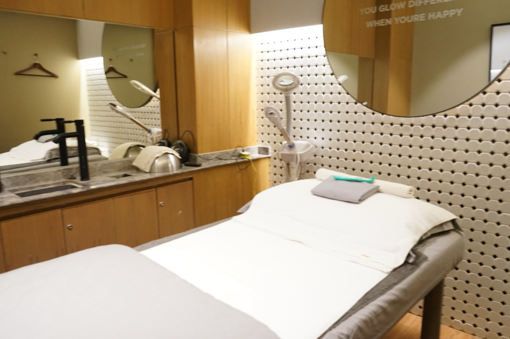

Calm Start
Oxygen and hydration without aggressive extraction, no peel on the first visit. The doctor assesses the skin barrier before the next step.
- Oxy Facial Hydrating, sensitive-skin protocol
- Doctor consultation
Single sessionRp 799.000
Skin that reddens and stings is a different customer: often not yet able to take microneedling or strong peels. Calm soothes and strengthens the barrier first, and is the natural entry before any other pathway.

Bring your questions. Your doctor will help you understand your options.
01Reddens easily after skincare or facials
02Stinging, dry, tight-feeling
03Barrier damaged by over-exfoliation
04Mild rosacea or persistent redness
05Put off facials by a past irritation
Consultation is free. The doctor confirms suitability and price before treatment.
Oxygen and hydration without aggressive extraction, no peel on the first visit. The doctor assesses the skin barrier before the next step.
An H2O Sensi and red-light series to calm, with a minimal home routine. Week 8: the barrier is steadier.
A regenerative booster for a barrier that is already steady, on the doctor's assessment only; the price is given before you decide.
Packages are paid upfront. Results vary. Intervals are reviewed with your doctor.
Meet your doctor and discuss your skin, goals, and history.
Understand your options and the price before you decide.
Review progress together and decide what comes next.
The handpiece sprays solution and vacuums it straight back, lifting what is inside the pores and replacing it with serum.
See the skin explainer ↗HOW IT WORKSAn LED panel emits light at specific wavelengths that skin cells absorb, calming inflammation and speeding recovery.
See the skin explainer ↗HOW IT WORKSA stream of pressurised oxygen pushes serum into the skin surface with no needles and no abrasion.
See the skin explainer ↗Choose a concern. Read what the treatment does and what to expect.
Choose a clinic and a preferred time. Our team confirms availability on WhatsApp.
Ask about suitability, recovery, cost, and the next review before deciding.
Follow your clinician’s aftercare and agree when to review your skin.
H2O Sensi is built for it: no Sebo solution, no aggressive extraction, closed with a calming mask. The doctor assesses first if the skin is reactive.
Not on the first visit. Once the barrier is steady, the doctor can use a short-contact peel.
H2O Sensi is Rp 1,200,000, with PDT Rp 1,450,000. The barrier protocol is set by the doctor and priced before you decide.


Doctor in Charge · Aesthetic Doctor
Setiabudi · TSM Cibubur

Tell us what’s on your mind. Start with a free doctor consultation at your nearest Surface clinic.
● WhatsApp replies daily, 09.00–22.00 WIB